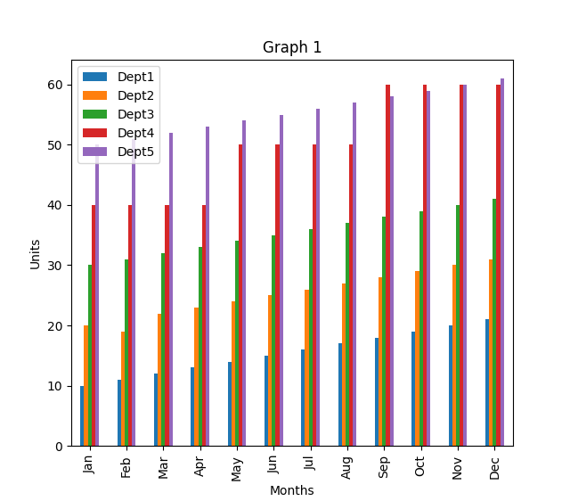
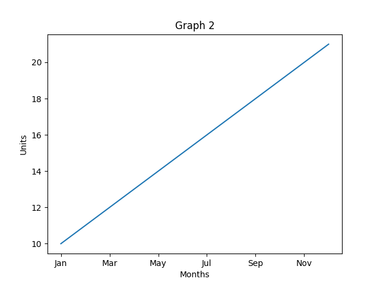
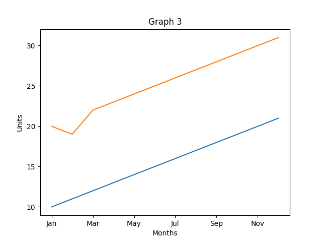
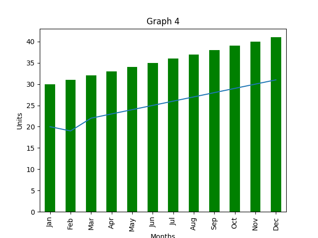

Pandas and MatPlotLib#
matplotlib.pyplot, often shortened to plt, is a submodule within the matplotlib library for Python. It provides a state-based, MATLAB-like interface for creating various data visualizations.
Think of it as a toolset that allows you to take your numerical data and turn it into informative and visually appealing charts, graphs, and plots.
Here are some key features of matplotlib.pyplot:
Simple and easy to use: pyplot offers a concise and intuitive syntax, making it accessible even for beginners in data visualization.
Extensive plotting capabilities: It supports a wide range of plot types, including line plots, bar charts, scatter plots, histograms, pie charts, and many more.
Customization options: You can fine-tune the visual elements of your plots, including colors, fonts, axes labels, and legends, to create professional-looking visualizations.
Object-oriented approach: While pyplot is state-based, it also offers object-oriented functionalities for more advanced customization and control over your plots.
Sample Data#
Jan |
Feb |
Mar |
Apr |
May |
Jun |
Jul |
Aug |
Sep |
Oct |
Nov |
Dec |
|
|---|---|---|---|---|---|---|---|---|---|---|---|---|
Dept1 |
10 |
11 |
12 |
13 |
14 |
15 |
16 |
17 |
18 |
19 |
20 |
21 |
Dept2 |
20 |
21 |
22 |
23 |
24 |
25 |
26 |
27 |
28 |
29 |
30 |
31 |
Dept3 |
30 |
31 |
32 |
33 |
34 |
35 |
36 |
37 |
38 |
39 |
40 |
41 |
Dept4 |
40 |
40 |
40 |
40 |
50 |
50 |
50 |
50 |
60 |
60 |
60 |
60 |
Dept5 |
50 |
51 |
52 |
53 |
54 |
55 |
56 |
57 |
58 |
59 |
60 |
61 |
Lecture Code#
# -*- coding: utf-8 -*-
"""
Created on Fri Nov 6 11:27:09 2020
@author: jgoudy
This script demonstrates various ways to analyze and visualize data
stored in a pandas DataFrame.
"""
import numpy as np
import pandas as pd
import sys
import matplotlib.pyplot as plt
def Example1():
"""
This function analyzes and visualizes data in a pandas DataFrame.
"""
# Create a NumPy array with sample data.
arr = np.array([[10, 11, 12, 13, 14, 15, 16, 17, 18, 19, 20, 21],
[20, 21, 22, 23, 24, 25, 26, 27, 28, 29, 30, 31],
[30, 31, 32, 33, 34, 35, 36, 37, 38, 39, 40, 41],
[40, 40, 40, 40, 50, 50, 50, 50, 60, 60, 60, 60],
[50, 51, 52, 53, 54, 55, 56, 57, 58, 59, 60, 61]])
# Create a pandas DataFrame from the NumPy array.
df = pd.DataFrame(arr,
index=['Dept1', 'Dept2', 'Dept3', 'Dept4', 'Dept5'],
columns=['Jan', 'Feb', 'Mar', 'Apr', 'May', 'Jun', 'Jul',
'Aug', 'Sep', 'Oct', 'Nov', 'Dec'])
# Print descriptive statistics of the DataFrame.
print("*** df.describe ***")
print(df.describe())
print()
# Print the entire DataFrame.
print("*** df ***")
print(df)
print()
# Print the first 2 and last 2 rows of the DataFrame.
print("*** df.head(2) ***")
print(df.head(2))
print()
print("*** df.tail(2) ***")
print(df.tail(2))
print()
# Access specific columns.
print("*** df['Mar'] ***")
print(df['Mar'])
print()
# Access specific columns and rows.
print("*** df.loc[:,['Jan','Feb','Mar']] ***")
print(df.loc[:, ['Jan', 'Feb', 'Mar']])
print()
# Access specific row and columns.
print(df.loc['Dept1', ['Jan', 'Feb', 'Mar']])
print()
print((df.loc['Dept3']))
print()
# Access multiple rows.
print((df.loc[['Dept1', 'Dept3']]))
print()
# Access specific element by position.
print("*** select by position ***")
print((df.iloc[1][1]))
print()
# Modify element by position.
df.iloc[1][1] = 19
# Get the number of rows and columns.
print(df.index.size)
print(df.columns.size)
print()
# Iterate through all elements and print them.
for r in range(df.index.size):
for c in range(df.columns.size):
sys.stdout.write(str(df.iloc[r][c]) + " ")
print()
# Print the DataFrame transposed.
print("*** Transposed DataFrame ***")
print(df.T)
print()
# Verify the original DataFrame is unchanged.
print("*** Original DataFrame ***")
print(df)
print()
# Print the row and column indexes.
print("*** Row indexes ***")
print(df.index)
print()
print("*** Column indexes ***")
print(df.columns)
print()
# Start a new figure for plotting.
# plt.figure()
# Create a transposed DataFrame for easier bar graph plotting.
dft = df.T
# Plot the bar graph from the transposed DataFrame.
dft.plot(kind='bar')
# Add labels and title to the graph.
plt.xlabel('Months')
plt.ylabel('Units')
plt.title(label='Graph 1', loc='center')
# Display the first graph.
plt.show()
# Extract data for Department 1 from the transposed DataFrame.
dft1 = dft['Dept1']
# Plot a bar graph for Department 1 data.
dft1.plot()
# Add labels and title to the graph.
plt.xlabel('Months')
plt.ylabel('Units')
plt.title(label='Graph 2', loc='center')
# Display the second graph.
plt.show()
# Extract data for Departments 1 and 2 from the transposed DataFrame.
dft1 = dft['Dept1']
dft2 = dft['Dept2']
# Plot a bar graph for both Department 1 and 2 data.
dft1.plot()
dft2.plot()
# Add labels and title to the graph.
plt.xlabel('Months')
plt.ylabel('Units')
plt.title(label='Graph 3', loc='center')
# Display the third graph.
plt.show()
# Note: The following graphs have similar patterns with different data combinations.
# Extract data for Departments 1 and 3.
dft1 = dft['Dept1']
dft3 = dft.Dept3
# Plot a bar graph for Department 1 with stacking and yellow color.
dft1.plot(kind='bar', stacked=True, color="yellow")
# Plot Department 2 without stacking.
dft2.plot()
# Plot Department 3 with stacking and green color.
dft3.plot(kind='bar', stacked=True, color="green")
# Add labels and title to the graph.
plt.xlabel('Months')
plt.ylabel('Units')
plt.title(label='Graph 4', loc='center')
# Display the sixth graph.
plt.show()
# Additional graphs can be created following the same pattern
# with different data combinations and plot options.
# Close all open figures to avoid clutter.
plt.close('all')
def main():
# This function serves as the entry point for the script.
# It calls the `Example1` function to analyze and visualize the data.
# Clear the terminal using platform-specific methods (may not work everywhere).
# _ = os.system('cls')
# ipx.get_ipython().magic('clear')
# ipx.get_ipython().magic('reset -f')
# Run the analysis and visualization function.
Example1()
# end of program
print("\nbye\n\n")
if __name__ == "__main__":
# Only run the `main` function if the script is executed directly.
# This prevents it from running when imported as a module.
main()
Graphs#



